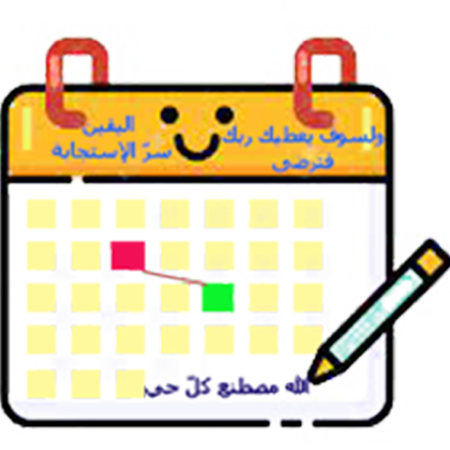

لا إله إلاّ أنت سبحانك .إنّي كنت من الظّالمين. فاستجبنا له ونجيناه من الغم وكذالك ننجي المومنين. ولا حول ولا قوة إلّا بالله الععليّ العظيم
<--
1
2
3
4
5
6
7
8
9
10
11
12
لا إله إلاّ أنت سبحانك .إنّي كنت من الظّالمين. فاستجبنا له ونجيناه من الغم وكذالك ننجي المومنين. ولا حول ولا قوة إلّا بالله الععليّ العظيم
أنت الذي لا إله إلا هو الملك القدوس السلام المومن المهيمن العزيز الجبار المتكبر سبحان الله عما يشركون , هو الله الخالق البارئ المصوّر له الأسماء الحسنى يسبح له ما في السماوات والأرض وهو العزيز الحكيم , فإذا عزمت فتوكل على الله إن الله يحب المتوكلين فإن تولوا فقل حسبي الله لا إله إلا هو عليه توكلت وهو رب العرش العظيم ومن يتوكل على الله فإنّه حسبه إن الله بالغ أمره قد جعل الله لكل شئ قدرا .
SUN
MON
TUS
WE
THI
FRI
SAM
00
:
00
:
00
AM
مفتاح الدعاء أولا : يا الله : يا من لا إله سواه , يا الله : يا هو يا هو . يا من هو الله الّذي لا إله إلاّ هو , ولا معبود إلاّ هو ,ولا ملك إلاّ هو , ولا قدوس إلاّ هو , ولا شافي إلاّ هو , ولا مليك إلأّ هو , ....الإسم الذي تريده+ إلا هو ... لو جسمك إقشعر والبكاء إشتغل فهو أمامك ينظر إليك .... (: اللاهو جلّ جلاله :) فصل---- :إعلم أنّ الدعاء مفتاح الحاجة ومستروح أصحاب الفاقة وملجأ المضطرين ومتنفس ذو المآرب---- ---- أقرب الدعاء إلى الإجابة دعاء الحال وهو أن يكون صاحبه مضطرا ---- إذا أنت علمت هذه الأسماء فقد علمت الإسم الأعظم فإذا هممت بالدعاء بها فليكن بعد صيام .أن تصوم يوم الخميس وتدعوا بها في الثلث الأخير من ليلة الجمعة في وجه السحر والله الّذي لا إله إلّا هو لا يدعوا بهذه الأسماء عبد مومن إلّا أجاب الله تعالى دعاه . حتى لو سأله أن يمشي على الماء وعلى متن الهوا إلّا اجيب وهي هذه ملخصه : .(مخطوط أسماء الله الحسنى ) ----رؤية صالحة ---- لمن أراد أن يرى رؤية صالحة يصلي لله أولا ركعتين شكر --ثم يقرأ سورة يس 7 مرات ---ثم تقول: اللّهم بحق يس ومن نزلت عليه ومن نزل بها أرني رؤية صالحة يارب العالمين يا رحمن يارحيم..ثم تبقى تكرر الآية (لقد جاءكم رسول من أنفسكم عزيز عليه ما عنتم حريص عليكم بالمومنين رؤوف رحيم , فإن تولّوا فقل حسبي الله لا إله إلا هو عليه توكلت وهو ربّ العرش العظيم ) تبقى تكررها إلى أن تنام |

12
Feb
2022
بسم الله
كهيعص حمعسق
سورة مريم النبر والتنغيم
مخطوط أسماء الله الحسنى